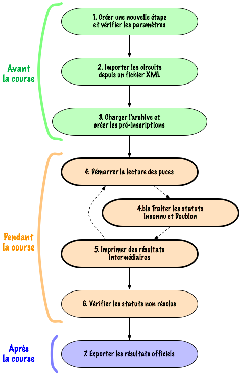

Voici un guide rapide pour découvrir les fonctions essentielles de Geco : sept points pour organiser la GEC d’une course d’orientation. Pour un survol de différents styles d’organisation, lisez la section Workflows.
1. Utilisez le Lanceur et l’onglet Étape pour configurer une nouvelle étape.
2. Chargez des circuits depuis l’onglet Étape.
3. Faites les inscriptions des concurrents depuis l’onglet Coureurs et avec l’Archive.
Voir la démo des points 1 à 3 dans le screencast Avant la course.
4. Vérifiez la configuration du boîtier maître dans l’onglet Étape et cliquez sur le bouton Lecture dans la Barre d’outils.
Les concurrents lisent leur puce dans le boîtier maître pour obtenir leur statut et récupérer leurs temps intermédiaires.
4bis. Corrigez les problèmes directement dans l’onglet Coureurs et en utilisant la Fenêtre de fusion. Découvrez le Process Auto pour vous faire une idée des process manuel et auto.
Découvrez le mode auto dans ce screencast.
5. Imprimez les Résultats provisoires.
Voir la démo des points 4 à 5 dans le screencast Pendant la course.
6. Vérifiez les statuts non-résolus pour voir si tout le monde a bien fini.
7. Générez les Résultats officiels pour publication et analyse.
Voir la démo des points 6 et 7 dans le screencast Après la course.
